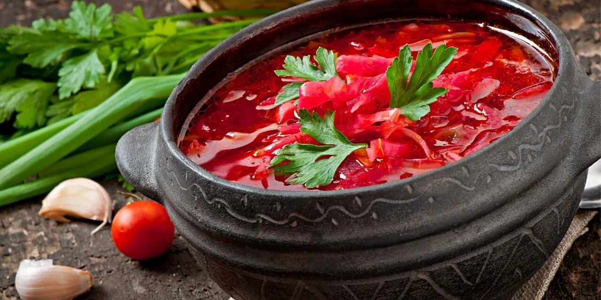
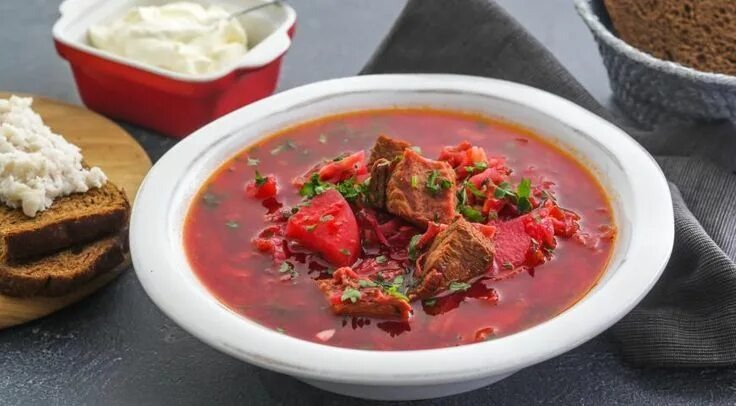

Как приготовить вкусный борщ
вниз
Борщ — это традиционное блюдо восточноевропейской кухни.
Ингредиенты
- Свекла - 2 шт.
- Картофель - 3 шт.
- Капуста - 300 г
- Морковь - 1 шт.
- Лук - 1 шт.
- Томатная паста - 2 ст. ложки
- Мясо (говядина или свинина) - 500 г
- Чеснок - 2 зубчика
- Соль, перец, зелень по вкусу
Пошаговый процесс
- Отварите мясо до готовности.
- Добавьте нарезанный картофель.
- Обжарьте морковь, лук и свеклу, добавьте томатную пасту.
- Добавьте капусту и зажарку в кастрюлю.
- Доведите до кипения, добавьте специи и чеснок.
- Оставьте настояться 10 минут перед подачей.
Таблица калорийности
| Продукт |
Калории (на 100 г) |
| Свекла |
43 |
| Картофель |
77 |
| Мясо |
250 |
Фотографии


Наверх
Вы внизу страницы
Читать больше о борще